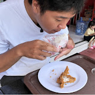

트립콤파니 여행지도
나라를 선택하고, 도시별 현지 가이드 영상을 만나보세요
내 위치
랜덤 여행지
×
지도를 불러오는 중입니다…
트립콤파니
여행하는트콤
두 채널 모두
영상 준비중
N
최근 업데이트
×
이어서 볼 영상
광고 영역 (728×90)
트콤 근황을 알려드림
트콤 최신 여행 가이드
트립콤파니
지구라는 행성 여행의 백과사전이 되고자 합니다

여행하는트콤
가이드 뒤편의 진짜 여행, 브이로그로 그대로 담습니다